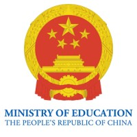
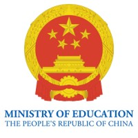

Tianjin Experimental
High School
International Division
Seeking Truth Through Facts
About Our School
Founded in 1923, Tianjin Experimental High School (TEHS) has consistently ranked among the top 5 high schools in Tianjin municipality, renowned for its exceptional teaching and learning quality. In 2023, we celebrated our centennial anniversary, marking a significant milestone in our educational journey.
Our updated mission statement reflects our commitment to excellence and international education:
- TEHS aims at fostering the youth of China to be outstanding lifelong learners.
- TEHS makes every effort to create an open, innovative, reflective culture throughout the entire school community.
- TEHS advocates the entire school community to be faithful, patriotic, persevering and enterprising.
- TEHS respects individual differentiation and potential as well as engaging and encouraging self-expression.
This mission statement embodies our school vision, reflects IB philosophy, promotes international-mindedness, and honors our rich tradition while preparing students for the challenges of the 21st century.
Our Programs
TEHS offers a unique dual-track educational pathway that combines the rigor of the Chinese National Curriculum with the internationally recognized IB Diploma Programme. This distinctive approach ensures our students receive a comprehensive education that prepares them for both local and global opportunities.
Students first enter through our prestigious Chinese National Curriculum track, which provides a strong foundation in core subjects and Chinese cultural education. After demonstrating academic excellence, students may apply for admission to our IB Diploma Programme, where they engage in a challenging curriculum that emphasizes critical thinking, research skills, and international perspectives.
Our IB Programme, authorized since 2008, offers a world-class education that is recognized by leading universities worldwide. The program's emphasis on inquiry-based learning, intercultural understanding, and community service aligns perfectly with our school's mission to develop well-rounded, globally-minded individuals.
 
